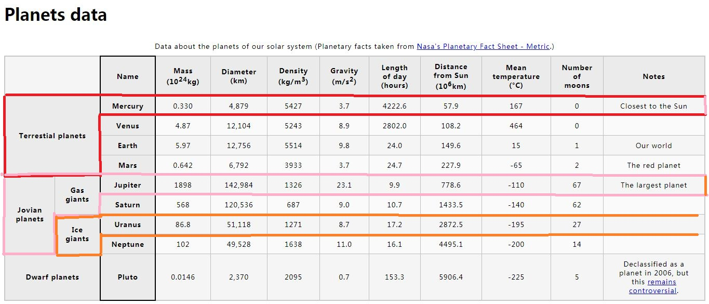
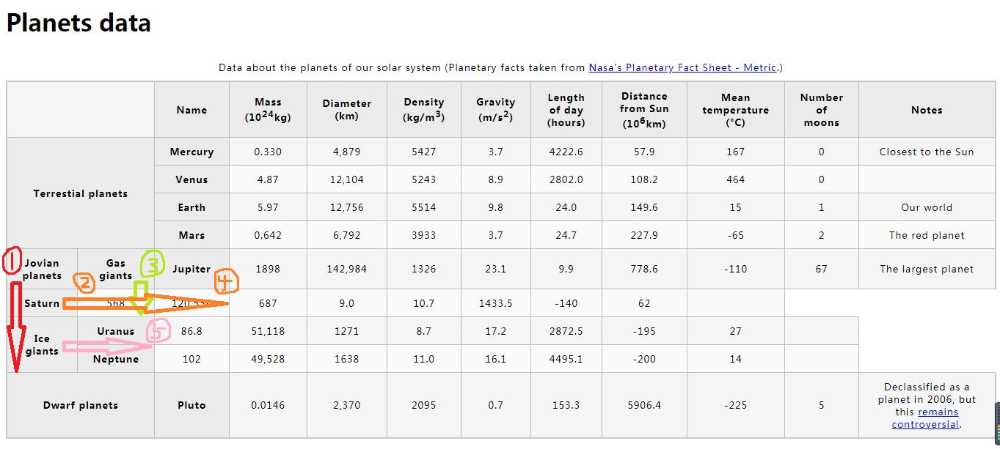
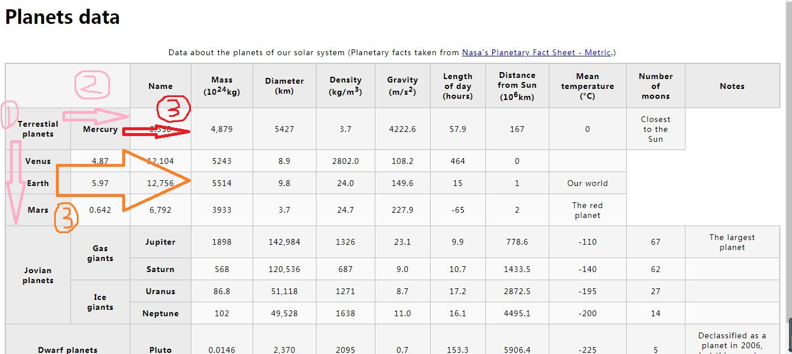

作业：构建行星数据
1、<tr>行的分割
<tr>行的分割：要把<th>看成<td>，一行里第一列第一个格要与n列第一个格在同一个<tr>里，这样才能随心所欲地指挥一个格子让别的格子往右靠！（这图形状像枪）


原理：本来是一行的，因为跨行高或者跨列宽（往下或往右）才能把别人挤右边过去了（下边的谦让上边的，你往下大一格我往右退一格，上面的格子往下下面的格子会往右退。右边谦让左边的，你往右大一格我往右退一格。）
小结：跨行高——有人往下，就有人往右。跨列宽——有人往右，也有人往右。


2、rowspan="1"和colspan="1"都不用写，这是默认的！
3、Gas giants和Ice giants都是rowgroup（父标题）！
<!DOCTYPE html>
<html>
<head>
<meta charset="utf-8">
<title>Table template</title>
<link href="minimal-table.css" rel="stylesheet" type="text/css">
</head>
<body>
<h1>Planets data</h1>
<table>
<caption>Data about the planets of our solar system (Planetary facts taken from <a href="http://nssdc.gsfc.nasa.gov/planetary/factsheet/">Nasa's Planetary Fact Sheet - Metric</a>.)
</caption>
<colgroup>
<col span="2"></col>
<col style="border:2px solid black"></col>
</colgroup>
<thead>
<tr>
<td colspan="2"></td>
<th scope="col">Name</th>
<th scope="col">Mass (10<sup>24</sup>kg)</th>
<th scope="col">Diameter (km)</th>
<th scope="col">Density (kg/m<sup>3</sup>)</th>
<th scope="col">Gravity (m/s<sup>2</sup>)</th>
<th scope="col">Length of day (hours)</th>
<th scope="col">Distance from Sun (10<sup>6</sup>km)</th>
<th scope="col">Mean temperature (°C)</th>
<th scope="col">Number of moons</th>
<th scope="col">Notes</th>
</tr>
</thead>
<tbody>
<tr>
<th rowspan="4" colspan="2" scope="rowgroup">Terrestial planets</th>
<th scope="row">Mercury</th>
<td>0.330</td>
<td>4,879</td>
<td>5427</td>
<td>3.7</td>
<td>4222.6 </td>
<td>57.9</td>
<td>167</td>
<td>0</td>
<td>Closest to the Sun</td>
</tr>
<tr>
<th scope="row">Venus</th>
<td>4.87</td>
<td>12,104</td>
<td> 5243 </td>
<td>8.9 </td>
<td>2802.0</td>
<td>108.2</td>
<td>464</td>
<td>0</td>
<td></td>
</tr>
<tr>
<th scope="row">Earth</th>
<td>5.97</td>
<td>12,756</td>
<td>5514 </td>
<td>9.8</td>
<td>24.0</td>
<td>149.6</td>
<td>15</td>
<td>1</td>
<td>Our world</td>
</tr>
<tr>
<th scope="row">Mars</th>
<td>0.642 </td>
<td>6,792</td>
<td>3933</td>
<td>3.7</td>
<td>24.7</td>
<td>227.9</td>
<td>-65</td>
<td>2</td>
<td>The red planet</td>
</tr>
<tr>
<th rowspan="4" scope="rowgroup">Jovian planets</th>
<th rowspan="2" scope="rowgroup">Gas giants</th>
<th scope="row">Jupiter</th>
<td>1898</td>
<td>142,984</td>
<td>1326</td>
<td>23.1</td>
<td>9.9</td>
<td>778.6</td>
<td>-110</td>
<td>67</td>
<td>The largest planet</td>
</tr>
<tr>
<th scope="row">Saturn</th>
<td>568</td>
<td>120,536</td>
<td>687</td>
<td>9.0</td>
<td>10.7</td>
<td>1433.5</td>
<td>-140</td>
<td>62</td>
<td></td>
</tr>
<tr>
<th rowspan="2" scope="rowgroup">Ice giants</th>
<th scope="row">Uranus</th>
<td>86.8</td>
<td>51,118</td>
<td>1271</td>
<td>8.7</td>
<td>17.2</td>
<td>2872.5</td>
<td>-195</td>
<td>27</td>
<td></td>
</tr>
<tr>
<th scope="row">Neptune</th>
<td>102</td>
<td>49,528</td>
<td>1638</td>
<td>11.0</td>
<td>16.1</td>
<td>4495.1</td>
<td>-200</td>
<td>14</td>
<td></td>
</tr>
<tr>
<th colspan="2" scope="rowgroup">Dwarf planets</th>
<th scope="row">Pluto</th>
<td>0.0146</td>
<td>2,370</td>
<td>2095</td>
<td>0.7</td>
<td>153.3</td>
<td>5906.4</td>
<td>-225</td>
<td>5</td>
<td>Declassified as a planet in 2006, but this <a href="http://www.usatoday.com/story/tech/2014/10/02/pluto-planet-solar-system/16578959/">remains controversial</a>.</td>
</tr>
</tbody>
</table>
</body>
</html>